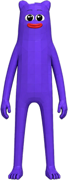
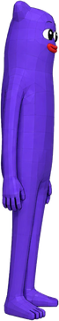

IMD · protocol walk
A worker's walk through IMD
Follow one worker seat through the operating cycle, from joining the swarm to the open question at the end.


Snapshot 12 Oct 2026. Counters come from IMD's own dashboards; transfers and splits are checked onchain or in contracts.